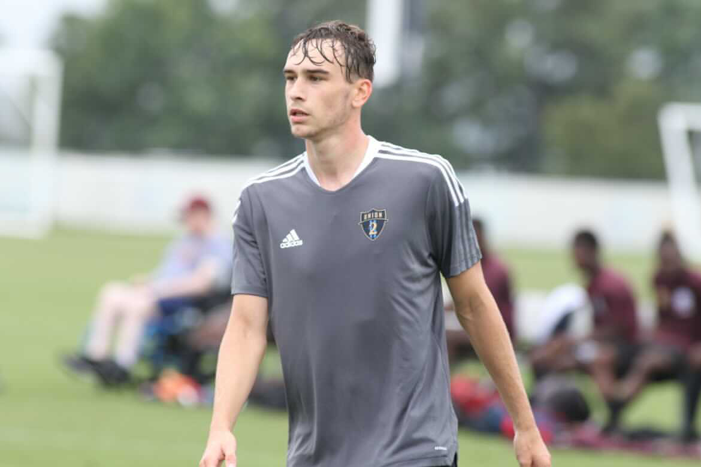
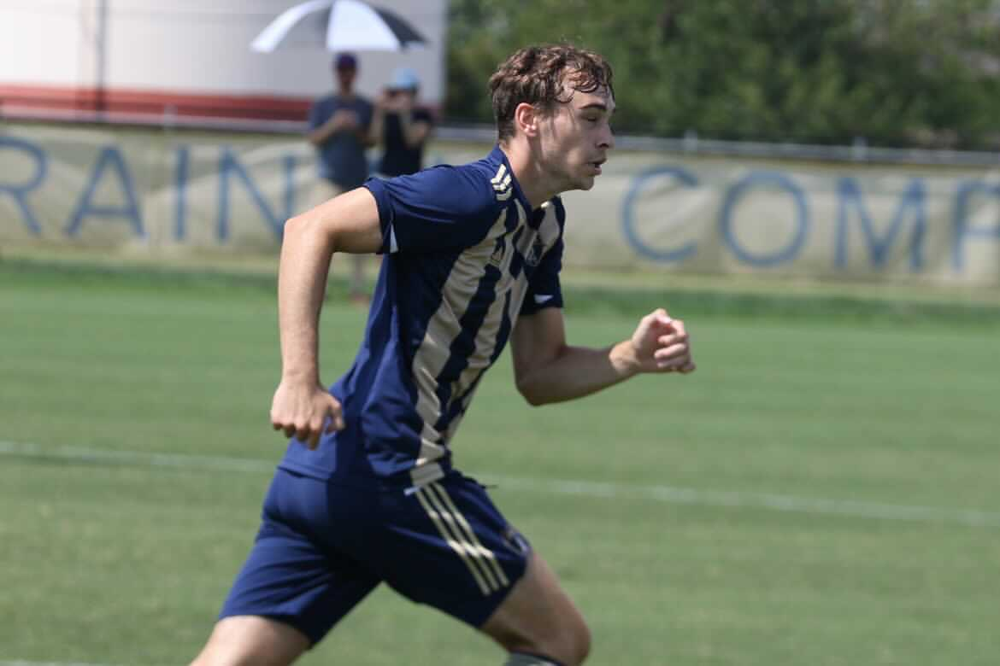
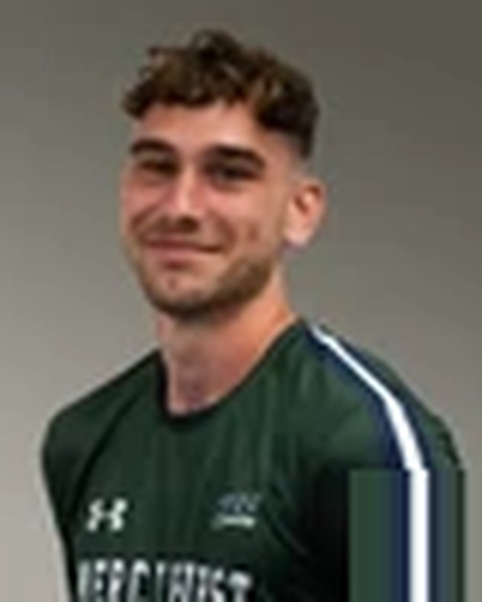

On the Field




Jak Higginbotham grew up inside professional football from the start — son of former Premier League defender Danny Higginbotham, he developed through the academies of Sunderland AFC and Crewe Alexandra, building the tactical and technical foundation that comes from years inside English professional environments. That upbringing didn't just teach him the game; it shaped how he understands it at a level most players never access.
At the collegiate level, Jak started at the University of Akron — one of the most decorated programs in NCAA Division I history — where he won the MAC Conference title and trained daily alongside future professionals. He transferred to Notre Dame College before moving to Mercyhurst University, where he won the NEC Conference championship and continues to anchor the defensive unit while completing a degree in Sport Business Management.
Alongside college ball, Jak captained Cleveland Force SC in USL League Two in 2025, starting 11 of the club's first 12 matches against elite pre-professional competition. His experience spans English professional academies, the Philadelphia Union development pathway, NCAA Division I and II, and USL League Two — and he brings that cross-system perspective directly into sessions, coaching defenders on the technical demands, positional discipline, and game intelligence that high-level play requires.

Developed through two respected English professional academies, building a strong tactical and technical foundation from an early age inside a professional football culture.
Gained professional training environment experience and competed against elite young talent within the Philadelphia Union's player development structure.
Joined one of the most successful programs in NCAA D1 history. Won the MAC Conference title while training daily alongside future professionals in a nationally recognized program.
Transferred to Notre Dame College before continuing his career at Mercyhurst University.
Won the NEC Conference championship and anchors the defensive unit for the Lakers. Completing a degree in Sport Business Management.
Captained the side and started 11 of the club's first 12 matches as a central defender, establishing himself against elite NCAA and aspiring professional players.

